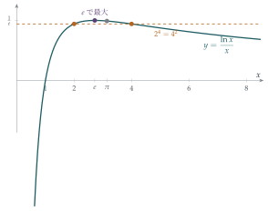

STEP II 2013、第1問
先に進む前に問題を読んでおこう。問題は STEP Support Programme の問題データベースにある： step.maths.org/questions/13-s2-q1
導入
\(\pi^e\) と \(e^\pi\) はどちらが大きいだろうか。電卓を使えば一瞬で答えが出る。\(e^\pi \approx 23.14\)、\(\pi^e \approx 22.46\) である。しかし電卓が教えてくれるのは、大きいという事実だけであって、なぜそうなるのかは教えてくれない。また、似たような無数の問いに一度に答えることもできない。\(3^\pi\) は \(\pi^3\) より大きいだろうか。自明な \(n = m\) 以外に、\(n^m = m^n\) を満たす整数の組はあるだろうか。
実は、これらの問いはすべて、ただ一つの曲線 \(y = \ln x\) と、それと交わる直線についての問いなのである。この問題は、注意深く描いた図が、式変形では手に負えなさそうな大小比較をいかに決着させるか、そして数 \(e\) がいかにして自然な境目として現れるかを示してくれる。
取りかかる前に
対数（logarithm）をとると、\(a^b = b^a\) は \(b\ln a = a\ln b\) と同値である。これを、一方の辺には \(a\) だけが、もう一方の辺には \(b\) だけが現れるように変形せよ。
\(b\ln a = a\ln b\) は \[\frac{\ln a}{a} = \frac{\ln b}{b}.\] と同値である。したがって、\(a^b\) と \(b^a\) の比較はすべて、ただ一つの関数（function）\(h(x) = \frac{\ln x}{x}\) の \(a\) と \(b\) における値の比較になる。そして \(\frac{\ln a}{a}\) は、原点と曲線 \(y = \ln x\) 上の点 \((a, \ln a)\) を結ぶ直線の傾き（gradient）である。この問題が直線についての問題になっているのはそのためである。
順を追って解く
段階 1 原点を通る接線
\(y = mx\) が \(x = x_0\) で \(y = \ln x\) に接する（touch）とき、どのような二つの式が成り立たなければならないか。
直線と曲線は交わらなければならず、\(mx_0 = \ln x_0\) が成り立ち、さらに傾きが等しく、\(m = 1/x_0\) でなければならない。後者を前者に代入すると \(1 = \ln x_0\) となるので、\(x_0 = e\)、\(m = 1/e\) である。原点から引いた接線（tangent）は点 \((e, 1)\) で曲線に接する。
一方、\(y = mx\) が \(x = a\) と \(x = b\) で曲線と交わるならば、\(\ln a = ma\) かつ \(\ln b = mb\) であるから \(\frac{\ln a}{a} = m = \frac{\ln b}{b}\) となり、\(b\ln a = a\ln b\)、したがって \(a^b = b^a\) が得られる。■
図について述べておく。原点を通り、接線よりわずかに傾きの小さい直線は、接点の両側で一回ずつ、計二回曲線と交わる。よって \(a < e < b\) である。傾きが \(1/e\) より大きい直線は曲線とまったく交わらない。\(\ln x\) は上に凸（concave）であり、その全体が接線 \(y = x/e\) の下側にあるからである。
段階 2 原点より上で \(y\) 軸と交わる直線
今度は直線を \(y = mx + c\)、ただし \(c > 0\) とする。\(\frac{\ln p}{p}\) と \(\frac{\ln q}{q}\) を \(m\) と \(c\) で表せ。
\(\ln p = mp + c\) と \(\ln q = mq + c\) から \[\frac{\ln p}{p} = m + \frac{c}{p}, \qquad \frac{\ln q}{q} = m + \frac{c}{q}.\] である。\(c > 0\) かつ \(p < q\) であるから \(\frac{c}{p} > \frac{c}{q}\) となり、\(\frac{\ln p}{p} > \frac{\ln q}{q}\) である。両辺に \(pq > 0\) を掛けると \(q\ln p > p\ln q\) となるので、\(p^q > q^p\) である。■
幾何学的に言えば、二点を通る直線が原点より上で \(y\) 軸と交わるとき、原点から見て点 \((p, \ln p)\) は点 \((q, \ln q)\) よりも急な角度に見える、ということである。
段階 3 \(e\) より右側にある弦
\(e \leq p < q\) のとき、\((p, \ln p)\) から \((q, \ln q)\) への弦の傾きは、\(p\) における曲線の傾きより小さい。それはなぜか。また、そのことからなぜ弦の \(y\) 切片が正になるのか。
\(\ln x\) は上に凸なので、その傾き \(1/x\) は減少する。したがって \(p\) から \(q\) への弦（chord）は \(p\) における接線よりも傾きが小さい。すなわち、その傾き \(s\) は \(s < \frac1p\) を満たす。弦の \(y\) 切片（\(y\)-intercept）は、\(p \geq e\) を用いると \[c = \ln p - sp > \ln p - \frac{1}{p} \cdot p = \ln p - 1 \geq 0,\] となる。よって、弦は原点より上で \(y\) 軸と交わる。■
このことと Stage 2 を用いて、\(\pi^e\) と \(e^\pi\) のどちらが大きいかを判定せよ。
\(p = e\)、\(q = \pi\) とする。両者を結ぶ弦の切片は正であるから、Stage 2 により \(p^q > q^p\)、すなわち \[e^\pi > \pi^e.\] である。
段階 4 接線に平行な弦
次に、\(p\) から \(q\) への弦の傾きがちょうど \(\frac1e\)、つまり接線 \(y = \frac{x}{e}\) の傾きと等しいとする。
この弦は \((e, 1)\) における接線に平行である。\(\ln x\) は上に凸なので、曲線はその接線の下側にある。弦は原点より上で \(y\) 軸と交わるか、それとも下で交わるか。
弦はある \(c\) を用いて直線 \(y = \frac{x}{e} + c\) と表される。その両端は曲線上にあり、曲線は接線 \(y = \frac{x}{e}\) 上またはその下側にあって、接線と接するのは \(x = e\) においてのみである。両端がともに \(x = e\) にあることはありえないので、少なくとも一方は接線より真に下側にある。したがって、この平行な弦全体が接線の下側にあり、\(c < 0\) となる。そこで \(c < 0\) として Stage 2 を繰り返すと、不等式の向きが逆になり、\(\frac{\ln p}{p} < \frac{\ln q}{q}\)、よって \(q^p > p^q\) が得られる。■
振り返り
一つの関数に帰着させる。 \(a^b\) と \(b^a\) の比較は、\(h(x) = \frac{\ln x}{x}\) として \(h(a)\) と \(h(b)\) の比較になった。
根拠のある図。 「図を用いて」という指示のそれぞれが、正確な事実によって裏づけられていた。すなわち、\(\ln\) が上に凸であること（弦は曲線の下側、接線は曲線の上側にある）と、切片の符号である。
\(e\) の特別な役割。 原点から引いた接線は \(x = e\) で接し、そこがこれらすべての比較の境目となる。
背後にある数学
この問題のすべては、\(h(x) = \frac{\ln x}{x}\) のグラフ（図 3.5.1）に見て取ることができる。その導関数（derivative）は \(h'(x) = \frac{1 - \ln x}{x^2}\) であるから、\(h\) は \((0, e)\) で増加し、\(x = e\) で最大値（maximum）\(\frac1e\) をとり、その後は \(0\) に向かって減少する。\(0\) と \(\frac1e\) の間の高さ \(m\) にある水平な直線はグラフと二回交わり、その交点 \(a < e < b\) は \(h(a) = h(b)\)、すなわちまさに \(a^b = b^a\) を満たす。\(e\) より右側では \(h\) は減少するので、\(e \leq p < q\) ならば \(h(p) > h(q)\)、すなわち \(p^q > q^p\) である。特に \(e^\pi > \pi^e\) であり、さらに一般に \(x \neq e\) であるすべての \(x\) について \(e^x > x^e\) が成り立つ。この勝負で \(e\) に勝てる数は他にない。

\(x^y = y^x\) のすべての解
\(x^y = y^x\) を満たす相異なる正の実数の組はどのようなものだろうか。うまい工夫ですべてを求めることができる。\(t > 1\) として \(y = tx\) とおく。すると \(x^{tx} = (tx)^x\) から \(x^t = tx\) が得られ、\(x^{t-1} = t\)、よって \[x = t^{1/(t-1)}, \qquad y = t^{t/(t-1)}.\] となる。\(t = 1 + \frac1n\) とおくと \(x = \left(1 + \frac1n\right)^n\)、\(y = \left(1 + \frac1n\right)^{n+1}\) となる。\(n = 1\) のときこれは \((2, 4)\) であり、\(n = 2\) のときは \(\left(\frac94, \frac{27}{8}\right)\) で、実際に \(\left(\frac94\right)^{27/8} = \left(\frac{27}{8}\right)^{9/4}\) が成り立つ。\(n \to \infty\) のとき両者はともに \(e\) に収束（converge）し、そこで二つの枝が出会う。この問題は 1728 年にダニエル・ベルヌーイ（Daniel Bernoulli）とクリスティアン・ゴールドバッハ（Christian Goldbach）の往復書簡で議論され、のちにオイラー（Euler）も取り上げた。
最も経済的な底
関数 \(x^{1/x} = e^{h(x)}\) もまた \(x = e\) で最大となる。このことは、ある興味深い問いに答えてくれる。記数法の「コスト」を、底と必要な桁数の積で測るとすると、最も経済的な底は \(e\) であり、整数の中では \(3\) である（\(2\) をわずかに上回る）。1958 年のソ連の Setun のように、\(3\) を底とする実験的なコンピュータもいくつか作られた。
思考のスキル
二つの量が複雑に絡み合った不等式や方程式は、しばしば一つの関数の二点における値についての主張になる。
その関数が得られれば、そのグラフ（どこで増加し、どこで減少し、どこで最大になるか）がすべての問いに一度に答えてくれる。ここでは、\(a^b\) と \(b^a\) の比較が \(h(a)\) と \(h(b)\) の比較になった。
次の一歩
整数の場合。 STEP I 1988、第1問 に挑戦せよ。
さらなる比較。 STEP II 2025、第3問 （OCRが配布している2025年の問題一式、zipファイル） に挑戦せよ。この節のグラフを用いて \(a^b\) と \(b^a\) のさらなる比較を決着させる問題であり、その中には \(e\) の数値的な評価が決め手となるものも含まれる。
一行の証明。 \(x \neq 0\) に対して成り立つ \(e^x > 1 + x\) に \(x = \frac{\pi}{e} - 1\) を代入して、\(e^\pi > \pi^e\) を直接証明せよ。
さらに学ぶために
Eli Maor, e: The Story of a Number（Princeton University Press）。『不思議な数 e の物語』。\(e\) の歴史を述べた本で、方程式 \(x^y = y^x\) も扱っている。
Paul Nahin, An Imaginary Tale（Princeton University Press）。『虚数の話』。\(\sqrt{-1}\) だけを扱った本ではなく、まさにこの種の興味深い計算が満載である。
Michael Spivak, Calculus（Cambridge University Press）。第 11 章では、導関数を用いてグラフの形を理解する方法が完全な厳密さをもって扱われている。